Product pitch · October 2026
Online notarization for Vietnam
A 12-slide introduction to Trustify, the workflow and a proposed notary-office pilot.
Team NotLikeUs
Refreshed 25 October 2026
1. Trustify: Online notarization for Vietnam
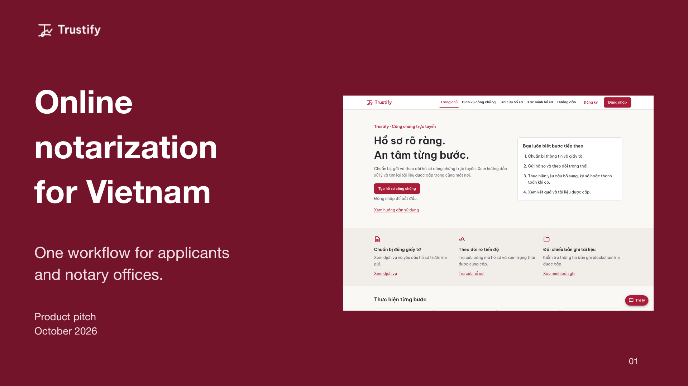
Read slide 1: Trustify: Online notarization for Vietnam
Online
notarization
for Vietnam
One workflow for applicants
and notary offices.
Product pitch
October 2026
Sources and context
Product source: https://github.com/sloweyyy/Trustify-Frontend/blob/main/README.md. Approved brand: https://github.com/sloweyyy/Trustify-Frontend/blob/main/docs/brand/brand-identity.md. Screenshot: final/routes/public-home-desktop.png, current October2026 UI. Team project established2025. This deck pitches a future pilot, not a launched regulated service.
2. Document work needs a visible next step
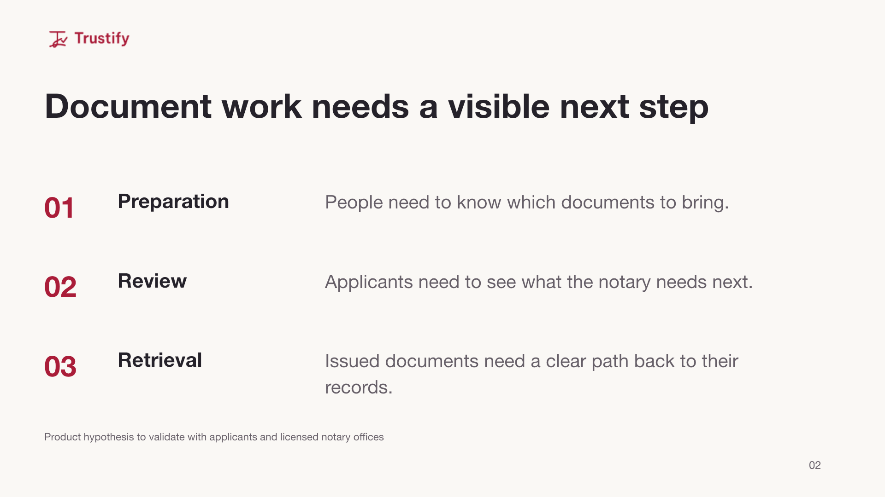
Read slide 2: Document work needs a visible next step
Document work needs a visible next step
01
Preparation
People need to know which documents to bring.
02
Review
Applicants need to see what the notary needs next.
03
Retrieval
Issued documents need a clear path back to their records.
Product hypothesis to validate with applicants and licensed notary offices
Sources and context
Problem framing is a product hypothesis drawn from the approved brand brief and the application workflow. No user-research study, measured time saving or market-size claim is asserted.
3. Who Trustify serves
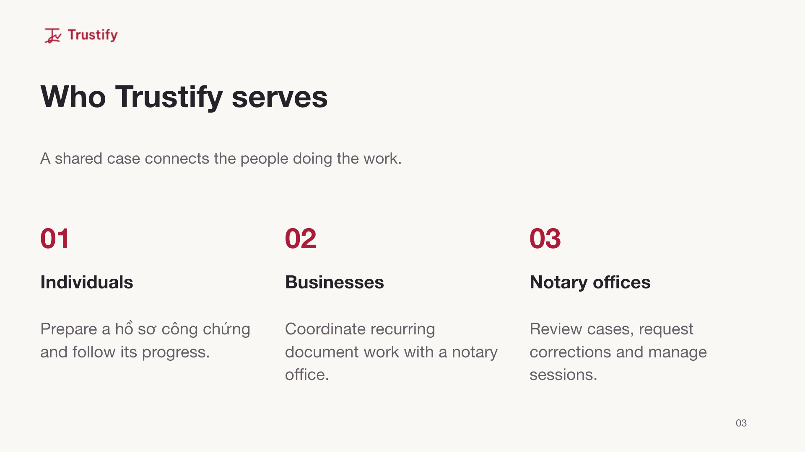
Read slide 3: Who Trustify serves
Who Trustify serves
A shared case connects the people doing the work.
01
Individuals
Prepare a hồ sơ công chứng and follow its progress.
02
Businesses
Coordinate recurring document work with a notary office.
03
Notary offices
Review cases, request corrections and manage sessions.
Sources and context
Approved audiences and positioning: https://github.com/sloweyyy/Trustify-Frontend/blob/main/docs/brand/brand-identity.md. Business use is an intended audience, not a claim that enterprise tenancy or corporate permissions exist.
4. One case across the entire workflow
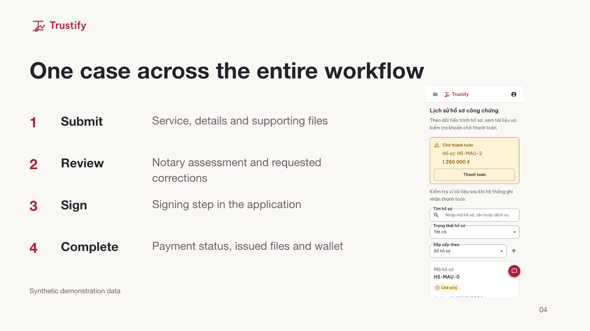
Read slide 4: One case across the entire workflow
One case across the entire workflow
1
Submit
Service, details and supporting files
2
Review
Notary assessment and requested corrections
3
Sign
Signing step in the application
4
Complete
Payment status, issued files and wallet
Synthetic demonstration data
Sources and context
Lifecycle and payment behavior: https://github.com/sloweyyy/Trustify-Frontend/blob/main/docs/design-system.md and https://github.com/sloweyyy/Trustify-Frontend/blob/main/docs/design/final/README.md. Screenshot uses synthetic QA records, not real client data. A signing interface is not by itself a legally qualified digital signature.
5. Guided submission in Vietnamese
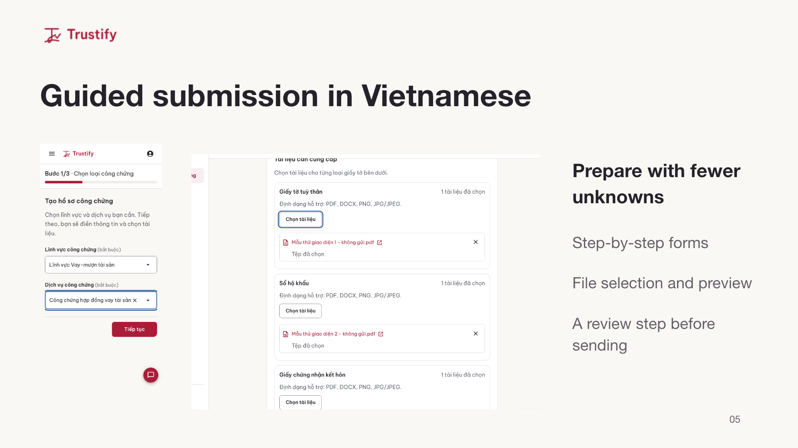
Read slide 5: Guided submission in Vietnamese
Guided submission in Vietnamese
Prepare with fewer
unknowns
Step-by-step forms
File selection and preview
A review step before sending
Sources and context
Implemented applicant wizard: https://github.com/sloweyyy/Trustify-Frontend/blob/main/src. Evidence: https://github.com/sloweyyy/Trustify-Frontend/blob/main/docs/design/screenshots/final/wizard/after-step1-service-mobile.png and after-upload-selected-desktop.png. Screens show anonymized/synthetic QA content.
6. A focused workspace for notary review
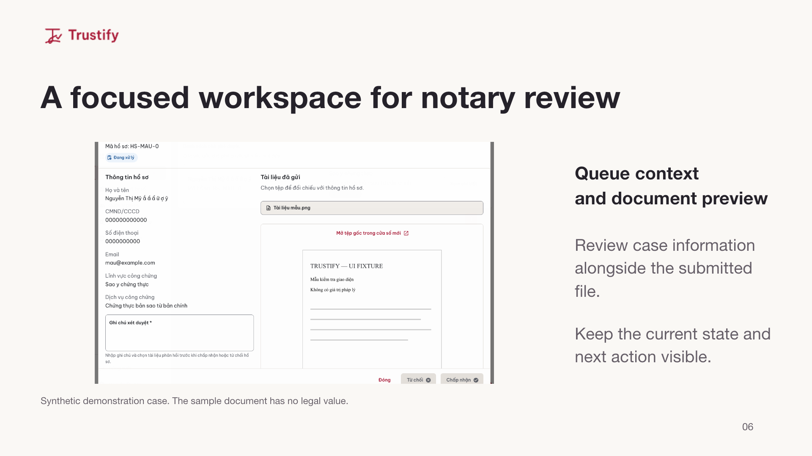
Read slide 6: A focused workspace for notary review
A focused workspace for notary review
Queue context
and document preview
Review case information alongside the submitted file.
Keep the current state and next action visible.
Synthetic demonstration case. The sample document has no legal value.
Sources and context
Notary review implementation and UI evidence: https://github.com/sloweyyy/Trustify-Frontend/blob/main/docs/design/final/README.md and https://github.com/sloweyyy/Trustify-Frontend/blob/main/docs/design/screenshots/final/states/notary-document-review-preview-desktop.png. The screenshot uses a sample document and synthetic QA identities. The deck makes no real throughput or processing-time claim.
7. Document verification with a record to inspect
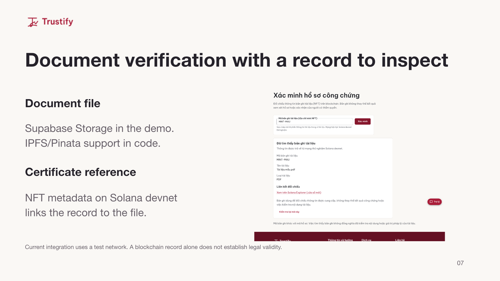
Read slide 7: Document verification with a record to inspect
Document verification with a record to inspect
Document file
Supabase Storage in the demo.
IPFS/Pinata support in code.
Certificate reference
NFT metadata on Solana devnet links the record to the file.
Current integration uses a test network. A blockchain record alone does not establish legal validity.
Sources and context
Blockchain implementation: https://github.com/sloweyyy/Trustify-Backend/blob/main/src/config/blockchain.js and src/services/notarization.service.js. Verification UI: https://github.com/sloweyyy/Trustify-Frontend/blob/main/docs/design/screenshots/final/states/public-verify-record-desktop.png. The public demo stores files and metadata in Supabase Storage. IPFS/Pinata pinning is supported in code. Metadata references are minted on Solana devnet. Live-demo configuration verified by the maintainer in https://github.com/sloweyyy/Trustify-Frontend/pull/50. NFT possession/metadata is not proof of legal validity or complete confidentiality.
8. A working technical foundation
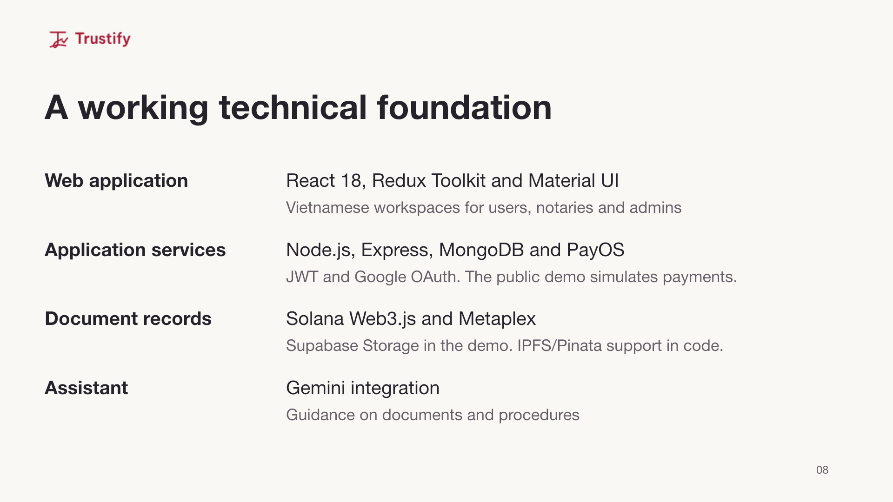
Read slide 8: A working technical foundation
A working technical foundation
Web application
React 18, Redux Toolkit and Material UI
Vietnamese workspaces for users, notaries and admins
Application services
Node.js, Express, MongoDB and PayOS
JWT and Google OAuth. The public demo simulates payments.
Document records
Solana Web3.js and Metaplex
Supabase Storage in the demo. IPFS/Pinata support in code.
Assistant
Gemini integration
Guidance on documents and procedures
Sources and context
Verified against frontend package.json/README and backend package.json, src/config/blockchain.js, src/services/chatbot.service.js and src/services/payment.service.js. Source: https://github.com/sloweyyy/Trustify-Frontend and https://github.com/sloweyyy/Trustify-Backend. Gemini supplies procedural guidance, not implemented document generation. PayOS is the supported payment integration. The current public demo simulates payments, as verified by the maintainer in https://github.com/sloweyyy/Trustify-Frontend/pull/50. The demo uses Supabase Storage for files/metadata, with IPFS/Pinata support in code.
9. Recognition for the team’s prototype
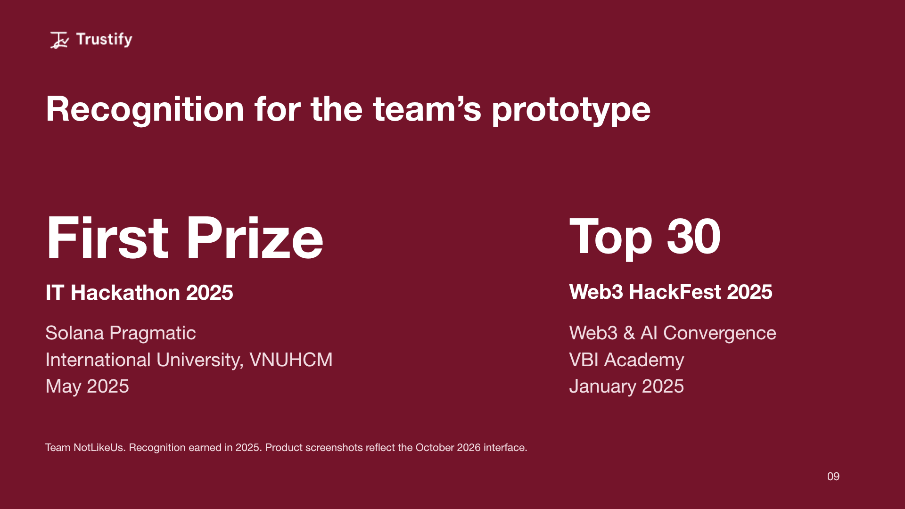
Read slide 9: Recognition for the team’s prototype
Recognition for the team’s prototype
First Prize
IT Hackathon 2025
Solana Pragmatic
International University, VNUHCM
May 2025
Top 30
Web3 HackFest 2025
Web3 & AI Convergence
VBI Academy
January 2025
Team NotLikeUs. Recognition earned in 2025. Product screenshots reflect the October 2026 interface.
Sources and context
Award names, issuers and dates supplied by the project owner and verified against their existing public LinkedIn Honors entries. https://www.linkedin.com/in/sloweyne/details/honors/. First Prize: Youth Union–Student Association, Faculty of Computer Science and Engineering, International University–VNUHCM, May2025. Top30: VBI Academy, January2025. Hackathon recognition is not evidence of commercial traction or a regulatory endorsement.
10. A business model to validate
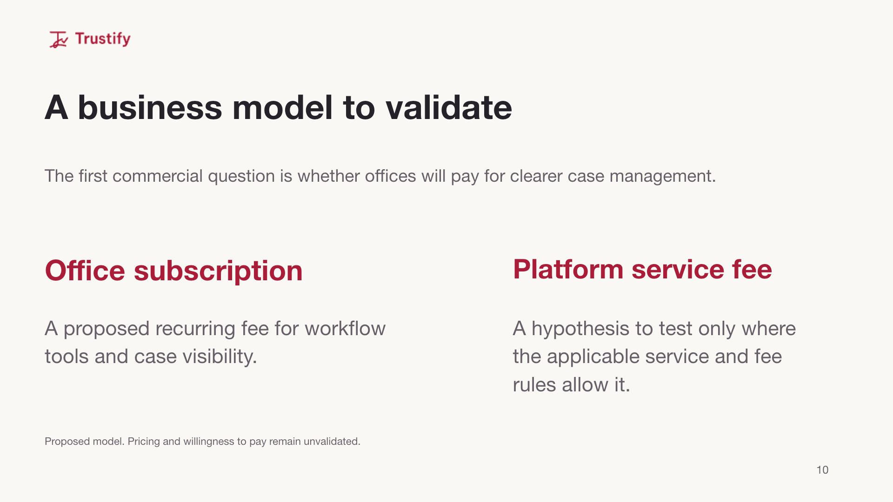
Read slide 10: A business model to validate
A business model to validate
The first commercial question is whether offices will pay for clearer case management.
Office subscription
A proposed recurring fee for workflow tools and case visibility.
Platform service fee
A hypothesis to test only where the applicable service and fee rules allow it.
Proposed model. Pricing and willingness to pay remain unvalidated.
Sources and context
Proposed commercial model only. No pricing, paying customers, revenue, funding, market size or validated willingness to pay is claimed. Fee design needs review with licensed notary offices and applicable rules before any offer.
11. A pilot with clear readiness gates
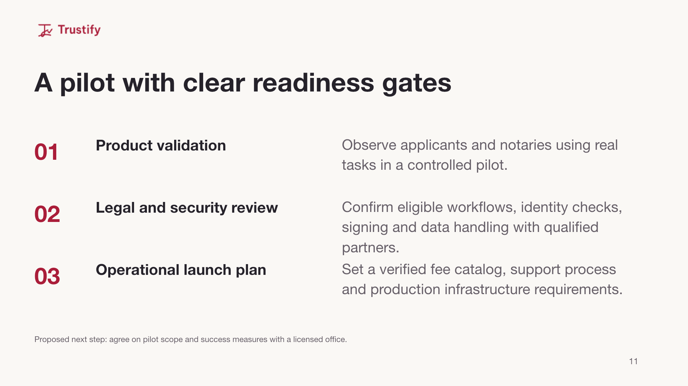
Read slide 11: A pilot with clear readiness gates
A pilot with clear readiness gates
01
Product validation
Observe applicants and notaries using real tasks in a controlled pilot.
02
Legal and security review
Confirm eligible workflows, identity checks, signing and data handling with qualified partners.
03
Operational launch plan
Set a verified fee catalog, support process and production infrastructure requirements.
Proposed next step: agree on pilot scope and success measures with a licensed office.
Sources and context
Forward-looking proposal, not a delivery promise or completed certification. No pilot agreements, user-research findings, regulated signing integrations, mainnet launch or commercial scale are claimed. Source for present capabilities: repo README and docs/design/final/README.md.
12. Looking for notary-office pilot partners
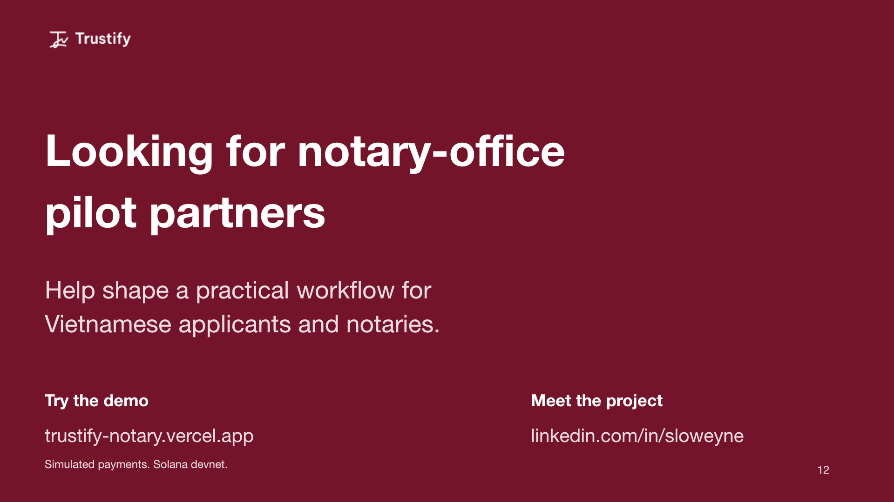
Read slide 12: Looking for notary-office pilot partners
Looking for notary-office
pilot partners
Help shape a practical workflow for
Vietnamese applicants and notaries.
Try the demo
trustify-notary.vercel.app
Simulated payments. Solana devnet.
Meet the project
linkedin.com/in/sloweyne
Sources and context
Call to action proposes discussions with licensed notary offices and product/security reviewers. No existing partnerships or endorsements implied. Demo: https://trustify-notary.vercel.app. Contact: https://www.linkedin.com/in/sloweyne/. Source: https://github.com/sloweyyy/Trustify-Frontend and https://github.com/sloweyyy/Trustify-Backend. The current public demo simulates payments and uses Supabase Storage. Maintainer configuration check: https://github.com/sloweyyy/Trustify-Frontend/pull/50. Deck updated25October2026.